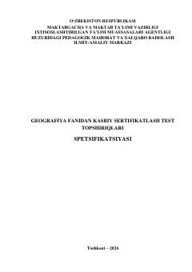

GFGeografiya fani o'qituvchilarini kasbiy sertifikatlash test sinovlari spetsifikatsiyasi.
Mazkur hujjat geografiya fani o'qituvchilarining kasbiy bilim, ko'nikma va kompetensiyalarini baholash uchun mo'ljallangan test sinovlarining mazmuni, tuzilmasi va baholash mezonlarini belgilaydi. Spetsifikatsiya test topshiriqlarining kognitiv darajalari, savollar taqsimoti hamda baholash jarayonini tashkil etish tartibini qamrab oladi. Ushbu metodik asos pedagog kadrlarni kasbiy sertifikatlash jarayonining shaffofligi va adolatliligini ta'minlashga qaratilgan.